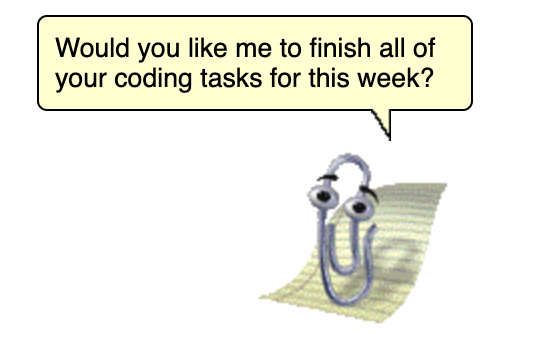

I work on dev tools.
See the discussion of this post on Lobste.rs and Hacker News.
Imagine if someone summoned a magical genie and wished for a perfect code editor. Since it is perfect, does that mean it provides you all the information you need to code the optimal solution? Or since it is perfect, does it enable you to accomplish the coding aspect instantly?
Thus, the paradox:
Does the perfect code editor mean that you spend nearly 100% of your work time using the editor or does it mean you spend nearly 0% of your work time using the editor?
What metric can we even use to measure the perfect code editor? How will we know if and when we have it? Are we close to reaching that point?
The trend for mainstream code editors seems to involve bringing more information into the editor. Version control info is displayed in the file listing. Feedback from linters, analyzers, and compilers are annotated on top of the editor. Issue tracking. Author info. Code reviews. Test status. All in the editor!
Bringing this information closer together should mean a better feedback loop. The user doesn't need to bounce between information sources. This results in fewer clicks, less context switching, and lower cognitive load.
In particular, I spend a lot of time rummaging through 20 browser tabs containing Stack Overflow, GitHub, and documentation pages. Even worse is searching on Slack. It is all annoying!
But we are discussing the perfect code editor. All possible information is now inside the editor. Imagine GitHub's Copilot, Stack Overflow, all your customer feedback, all your debug info, and all of your coworkers' brains being included inside the editor. Not only that, but it has a beautiful interaction design that makes it effortless to retrieve the information.
Given all of this information is in the editor, you never need to leave it.
For large software projects, there is so much more than just coding and debugging the product. There is the design, the endless meetings, figuring out what even needs to be built, talking to customers, etc.
In this case, the perfect code editor actually makes the coding and debugging tasks so easy that you spend very little on the coding aspect. Maybe you open the code editor up once a week for a few minutes to obliterate the stack of bugs and implement all the new feature requests. If GitHub's Copilot can almost instantly whip up 30 lines of code for me, then this perfect editor turns an entire sprint's worth of work into a drag-and-drop action.
Now you can focus on all the other challenging parts of product development.
We are already here for some things. For example, Firebase just feels like magic when I use it. Or when I find a really nice Node.js library that Just Works™.
So, what do you think the "perfect code editor" would look like?